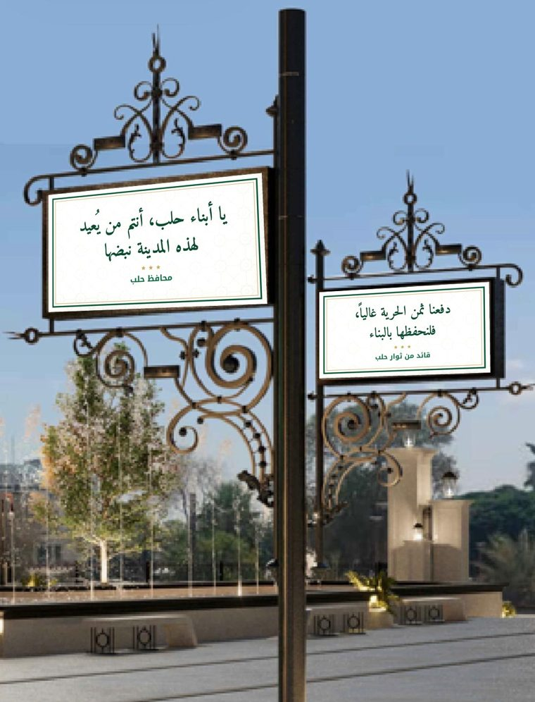

رسائل إلى أبناء حلب
على لوحات أعمدة الساحة رسائل قصيرة يوجّهها إلى أبناء حلب أشخاصٌ يحبهم الحلبيون ويحترمونهم.

من يكتب لحلب
أمثلة على المناصب والشخصيات، والأسماء تقترحها اللجنة المشتركة.
الدولة
رئيس الجمهورية · مستشارو الرئيس ونوابه · محافظ حلب · وزراء · نواب عن حلب في مجلس الشعب
المرجعية الدينية
مفتي الجمهورية · مفتي حلب · علماء حلب وقاماتها الدينية · رؤساء الطوائف المسيحية في حلب
الثورة
قادة من ثوار حلب · قادة من الثورة السورية يتفق عليهم السوريون · معتقل محرَّر · منشد بارز من أصوات الثورة
الفكر والأدب والفن
مفكر · شاعر · أديب أو روائي · خطاط أو فنان تشكيلي
العلم والطب
شخصيات علمية وطبية حلبية بارزة، داخل سوريا أو في المهجر
الاقتصاد
رجال أعمال حلبيون لهم حضور على مستوى سوريا
المجتمع
رياضيون حلبيون · أبناء حلب من عامة الناس · أطفال
لجنة مشتركة تختار وتعتمد
اقتراح الأسماء
لجنة مشتركة مع محافظة حلب تقترح الشخصيات من كل فئة.
طلب الرسائل
نتواصل مع كل شخصية ونطلب منها رسالة قصيرة لأبناء حلب.
الاعتماد والتركيب
تعتمد اللجنة النصوص وترتيبها على الأعمدة، ثم تُطبع وتُركَّب.
معايير الشخصيات
- محبوبة ولا خلاف عليها
- لا علاقة لها بالنظام البائد
- رسالتها قصيرة وموجّهة لأبناء حلب
أصدقاء حلب من العالم
شخصيات عربية وعالمية مرموقة تكتب لحلب. إن تحققت، تصبح الساحة حديث الناس داخل سوريا وخارجها.